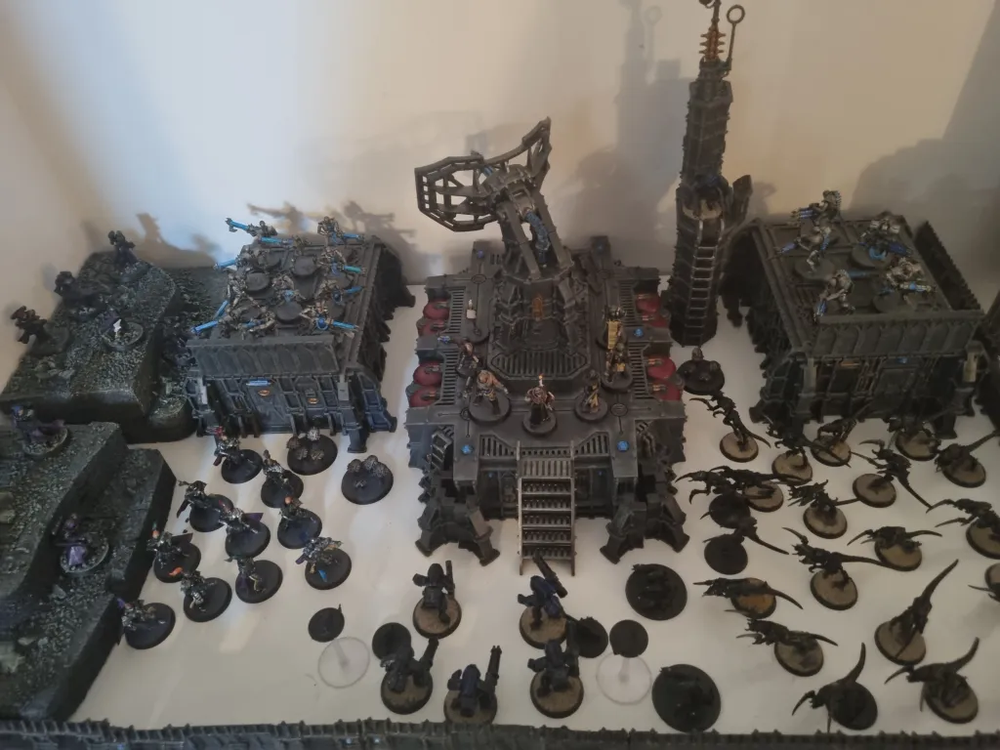

Kill Team ·
The Inquisitorial Agents Join the Fray!
On the orders of Grand Inquisitor Shade Al Sérrion of the Ordo Malleus, his agents deploy to investigate an Ordo Xenos laboratory that has gone silent. They find more than they bargained for.


Meet the operatives
The Interrogator
Hera Al Sérrion
Interrogator Hera Al Sérrion leads the Inquisitorial Agents into battle. I replaced the Interrogator’s head with one from the Sisters of Battle sprue.


Death World Veteran
Ashley
A Death World Veteran and Hera’s right hand. I replaced the veteran’s head with one from the Cadian Shock Troopers sprue.


Pistolier
Angel
Angel is a former bounty hunter recruited by the Grand Inquisitor and soon found themselves in Hera’s retinue. I swapped the Pistolier’s head for the Mystic’s because I liked the idea of a blind gunslinger.


Hexorcist
Bodhi
Once a fearsome zealot of the Imperial faith, Bodhi is now an even more fearsome follower of the Grand Inquisitor and their goals for humanity. I swapped the Hexorcist’s head for the Pistolier’s because I felt it suited the character better.


Auto Savant
Grim
Grim’s search for the truth has led him into trouble more than once. Eventually, it brought this odd Auto Savant to the Grand Inquisitor’s attention.


Servitor
B0B
B0B once served in the Imperial Guard, assigned to protect Hera, and was one of her few friends. When B0B was mortally wounded protecting her, Hera turned B0B into a Servitor in remembrance of her old friend.


Tome Skull
Scully
Sometimes asking the wrong person a question at the wrong time can end poorly, as this Tome Skull found out.